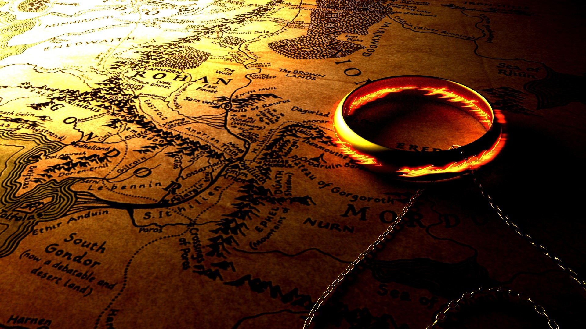
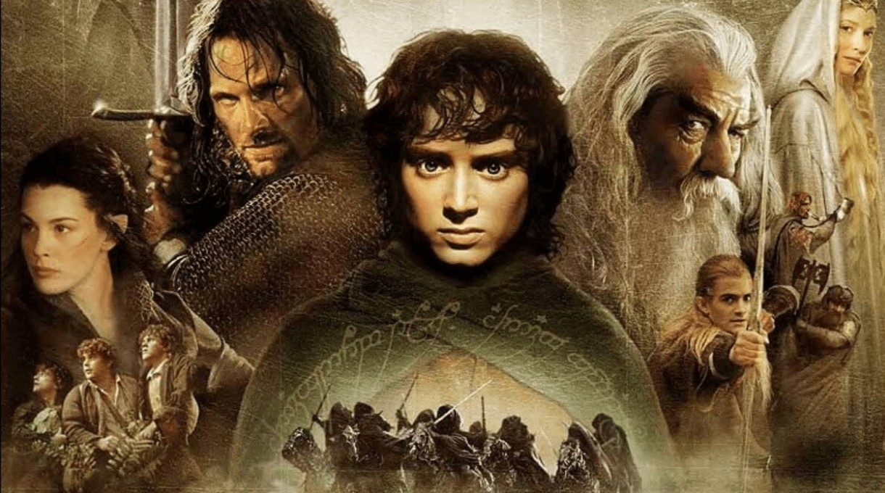

|
|
YÜZÜKLERİN EFENDİSİYüzüklerin Efendisi Tolkien'in yazdığı fantastik bir romandır. Hikâye, Tolkien'in çocuklar için yazdığı 1937 tarihli Hobbit'in devamı olarak başlamıştı ancak sonunda ondan çok daha büyük bir eser haline geldi. Çoğu II. Dünya Savaşı'nda olmak üzere 1937 ve 1949 yılları arasında aşamalar halinde yazıldı. 150 milyonun üstündeki satış sayısıyla tüm zamanların en çok satan ikinci romanıdır. Roman adını Orta Dünya’yı fethederek yüzüklere hükmeden hikayenin baş kötü adamı Karanlıklar ülkesinin Lordu, Lord Sauron’dan almaktadır. En başında Tolkien tarafından eserin Silmarillion ile birlikte iki ciltlik bir set oluşturması amaçlanıyordu ama yayıncı bu fikri reddetti. Ekonomik sebeplerden dolayı Yüzüklerin Efendisi 29 Temmuz 1954'ten, 20 Ekim 1955'e kadarki bir yıllık süreç içerisinde üç cilt olarak yayımlandı. Bu üç cilt Yüzük Kardeşliği, İki Kule ve Kralın Dönüşü olarak isimlendirildi. Frodo Baggins, Bilbo Baggins ile yaşayan genç bir Hobbit’dir. Hobbitler yerin hemen altında şirin evlerde yaşayan, kısa boylu, neşeli bir halktır. Bilbo Baggins maceraperest, yaşlı bir Hobbit’tir. Günün birinde Gandalf geri dönüp Bay Bilbo‘nun yanına gelir. Bilbo‘nun bir gezisi sırasında ele geçirdiği yüzükten haberdar olur. Bilbo’nun elinde olan yüzüğü çok eski zamanlarda Elf demircileri, yüzüklerini sihirli bir şekilde ustalıkları ve yetenekleri ile yapmış Karanlıkların Efendisi Sauron da bu yüzükleri işleyerek kendi gücü ile güçlendirmiştir. Üç yüzük cüce hükümdarlara, yedi yüzük ariflere, dokuz yüzük insanların büyük krallarına verilmiş. Ve tek yüzük de kendisi için yapılmış ancak bunu bir savaş sırasında insanlar ondan elini keserek almış. Orta Dünyanın ilk zamanlarında bu yüzük kayboluyor; ta ki Bilbo Baggins onu bulana kadar. Sauron’un diğer yüzükleri eline geçirmiştir ancak tek yüzük elinde değildir ve bunun için elinden geleni yapmaktadır. Bu yüzüğü takmak gerçekten çok güçlü bir irade istemektedir. Sauron harekete geçmiştir ve Orta Dünya halkının buna karşı bir şeyler yapması gerekmektedir. Bunu için yüzüğün bir an evvel yapıldığı ateşe, Hüküm Dağı’na götürülüp atılması gerekmektedir. Bunun için de bir yüzük taşıyıcısı gerekmektedir. Bu görev Frodo‘ya verilir. Ve hobbit köyünden üç arkadaşı da ona takılır; Merry, Pippin, Sam. Dört küçük Hobbit Elf diyarına doğru yola çıkarlar. Elf diyarında yüzük taşıyıcısının yanına 8 kişinin daha katılmasına karar verilir. Gondor kumandanı Boromir, Hobbitlerden Merry, Sam, Pippin; savaşçı Cüce Gimli, Elf prensi Legolas efsanelerde anlatılan kırık kılıcı birleştirecek efsane kral Aragorn, büyücü Gandalf ve Frodo. Böylece yüzük kardeşliği oluşur. Görevleri tek yüzüğü Sauron ele geçirmeden yüzüğün yapıldığı ve onu yok edebilecek tek yer olan Hüküm Dağı’nın içine atmaktır. Yolda birçok zorluklarla karşılaşırlar. Sauron yollarına türlü türlü engeller çıkarmaktadır. Gandalf bu engellerin bir tanesinde çok güçlü bir yaratıkla savaşmak zorunda kalır ve gruptan ayrılır. Sauron’un askerleri Orklar, gruba saldırırlar ve Boramir ölür, grup ikiye ayrılır. Aragorn, Legolas, Gimli bir grup oluşturup, Sauron ile savaşacak güçlerin yanına; Frodo ve Sam Hüküm Dağı’na giderler. Merry ve Pippin ise orklar tarafından esir edilirler. Savaşlar başlar. Sauron bütün dikkatini savaşa çevirir ve bu sırada önceden bir Hobbit olan ve 500 sene sahip olduğu yüzük tarafından bozularak bir yaratığa dönüşen Gollum kendini serbest bırakmaları karşılığında, Frodo ve Sam’i mordorun kara kapılarına götürmek adına söz vermiştir. Yüzüğü uzun ve zorlu bir yolculuktan sonra Hüküm Dağı’nın ateşine atarlar. Küçük Hobbitler artık birer kahraman olmuşlardır ve ordular diğer tarafta Sauron’u ve kötülüğü yenmişlerdir. Artık eve dönme zamanı gelmiştir. Çok özledikleri evleri hobbit köye döndüklerinde işlerin hiç de umdukları gitmediğini gördüler. Memleketlerinde büyük insanlar eşkiyalık yapmakta ve halklarını korkutmaktadır. Onlara karşı halkı uyarırlar ve yabancıları neşeli memleketlerinden kovarlar. Frodo, Aragorn ile krallar ülkesine gider. Sam evlenir. Merry ve Pipin ise Hobbit köyde mutlu bir hayat sürer. Yüzüklerin Efendisi'nin hep popüler kalması popüler kültürde göndermeler yapılmasına, Tolkien'in çalışmalarına hayran olanların topluluklar kurmasına ve Tolkien ile eserleri hakkında birçok kitap yayımlanmasına sebep oldu. Yüzüklerin Efendisi için radyo, televizyon ve birçok filmin ödüllü olan uyarlamaları yapıldı. Yüzüklerin Efendisi geçmişte olduğu gibi hala sanat eserleri, müzik, film, televizyon, video oyunları ve edebiyatı etkilemeye devam ediyor. |
|||||